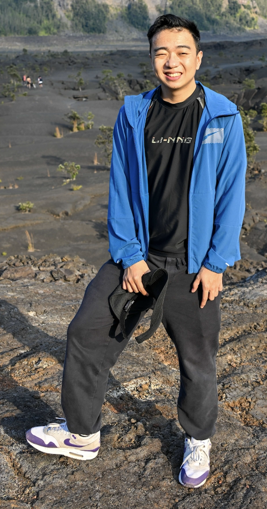
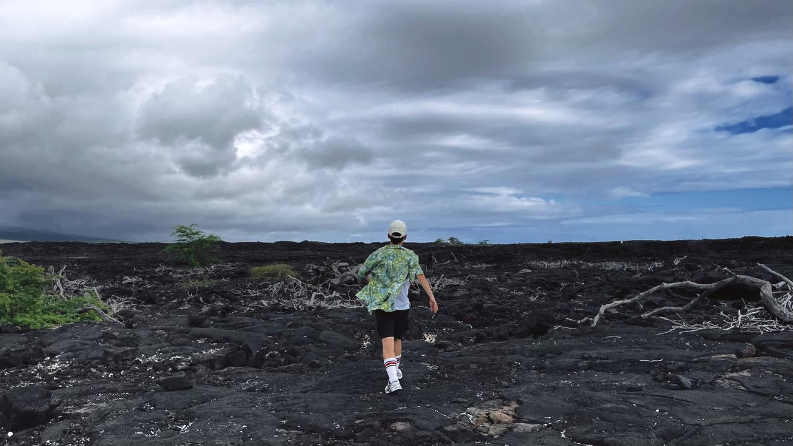
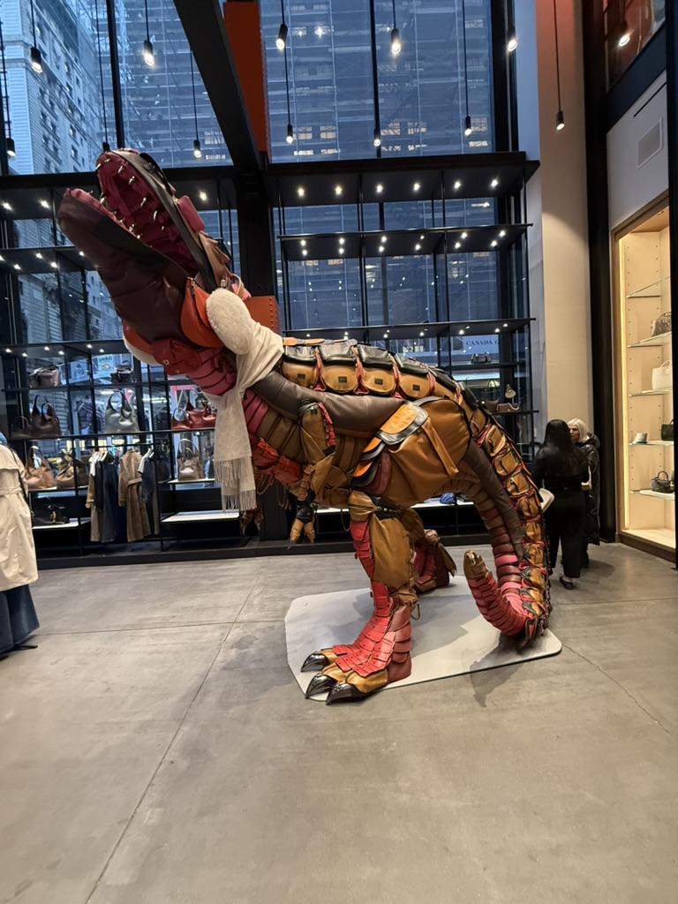
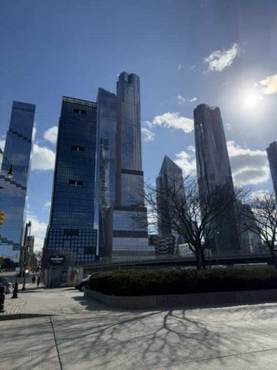
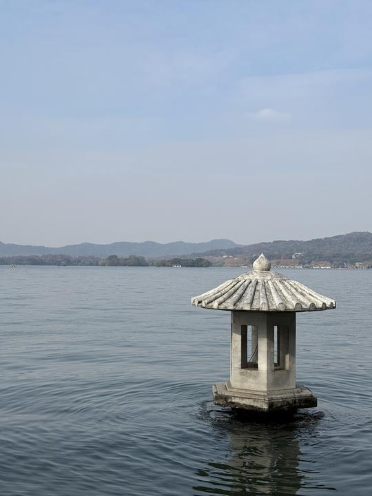

1. Overview
This project explores gradient-domain processing, a simple technique with a broad set of applications including blending, tone-mapping, and non-photorealistic rendering. The primary goal is to seamlessly blend an object or texture from a source image into a target image. While a simple copy-paste approach would create noticeable seams even with well-matched backgrounds, gradient-domain processing offers a more sophisticated solution that preserves visual quality.
2. Approaches
The core approach leverages the insight that human perception is more sensitive to image gradients than absolute intensity values. We formulate the problem as a least squares optimization where we solve for new intensity values 'v' within the source region 'S'. Given source image intensities 's' and target image intensities 't', the objective function is:
v = argminv Σi∈S,j∈N∩S((vi - vj) - (si - sj))² + Σi∈S,j∈N∩∁S((vi - tj) - (si - sj))²
Here, 'i' represents pixels in the source region 'S', and 'j' represents 4-neighbor pixels of 'i'. The first summation handles gradients between variable pixels, while the second summation addresses gradients between variable pixels and fixed target region pixels.
The implementation involves several key steps:
- Matrix Construction: We build a sparse matrix A and vector b to solve the system Ax = b. For each pixel in the source region, we create equations involving its 4-connected neighbors.
- Gradient Preservation: For each pixel:
- We set a coefficient of 4 for the current pixel
- Set -1 for each neighboring pixel within the mask
- Add background values to b for neighbors outside the mask
- Channel Processing: The blending is performed independently for each color channel (R,G,B), solving a separate system of equations for each.
- Solution: The system is solved using sparse least squares (LSQR), which efficiently handles the large, sparse matrices typical in image processing.
This method, known as Poisson blending, allows for seamless integration while permitting intensity adjustments that maintain the visual characteristics of the source content. The implementation also includes an extension for mixed gradients, where we choose between source and target gradients based on their relative magnitudes.
3. Results
3.1 Toy Problem
In this example, we compute the x and y gradients from an image s, then use all the gradients, plus one pixel intensity, to reconstruct an image v.
Denote the intensity of the source image at (x, y) as s(x,y) and the values of the image to solve for as v(x,y). For each pixel, we have two objectives:
- Minimize ((v(x+1,y)−v(x,y))−(s(x+1,y)−s(x,y)))², so the x-gradients of v should closely match the x-gradients of s.
- Minimize ((v(x,y+1)−v(x,y))−(s(x,y+1)−s(x,y)))², so the y-gradients of v should closely match the y-gradients of s.
Note that these could be solved while adding any constant value to v, so we will add one more objective:
Minimize (v(1,1)−s(1,1))², ensuring that the top left corners of the two images should be the same color.
Result Image:
3.2 Poisson Blending
In this blending process, we first select a region from the source image and specify where it should be blended into the target image. The source pixels are directly copied into the target region to create an initial blended image.
The final blend result is achieved using Poisson blending, which optimally combines the gradients of the source and target images. This method preserves the texture and color continuity, resulting in a more natural appearance.
The test sample result:
Source Image:

Target Image:

Source Image:
Target Image:

Source Image:
Target Image:
Source Image:
Target Image: